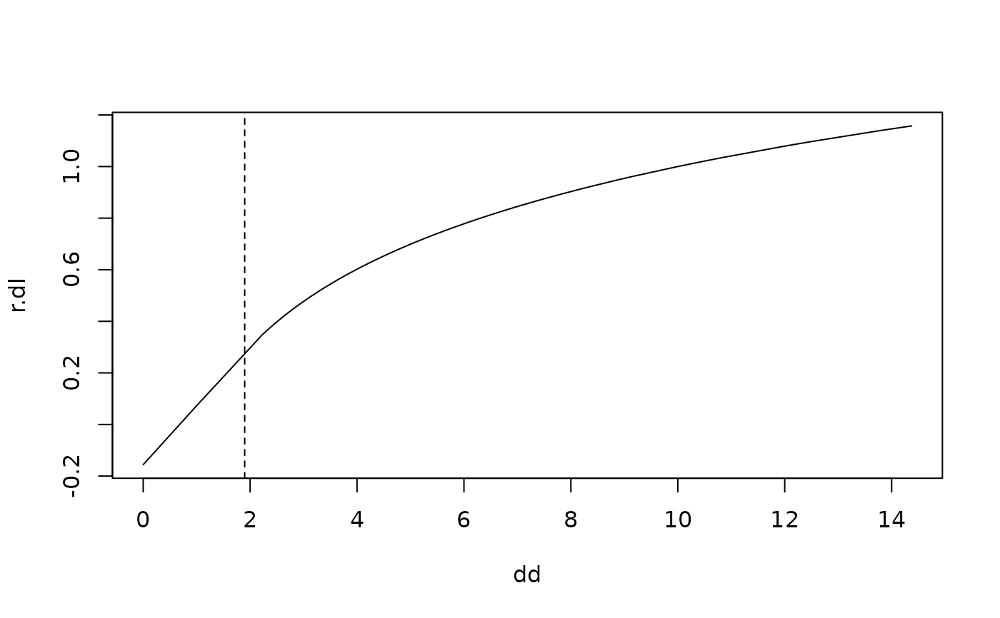

Transforms the data by a log transformation, modifying small and zero observations such that the transformation is linear for \(x \leq threshold\) and logarithmic for \(x > threshold\). So the transformation yields finite values and is continuously differentiable.
Usage
logSt(x, base = 10, calib = x, threshold = NULL, mult = 1)
logStInv(x, base = NULL, threshold = NULL)Arguments
- x
a vector or matrix of data to transform
- base
a positive or complex number: the base with respect to which logarithms are computed. Defaults to 10. Use
base = exp(1)for natural log.- calib
a vector or matrix of data used to calibrate the transformation and determine the required constant \(c\)
- threshold
constant \(c\) that determines the transformation. The inverse function
logStInvwill look for an attribute named"threshold"if the argument is set toNULL.- mult
a tuning constant affecting the transformation of small values, as described in Details
Value
the transformed data. The value \(c\) used for the transformation
and needed for inverse transformation is returned as
attr(.,"threshold") and the used base as attr(.,"base").
Details
In order to avoid \(log(x) = -\infty\) for \(x=0\) in
log-transformations there's often a constant added to the variable before
taking the \(log\). This is not always a pleasable strategy. The function
logSt handles this problem based on the following ideas:
The modification should only affect the values for "small" arguments.
What "small" is should be determined in connection with the non-zero values of the original variable, since it should behave well (be equivariant) with respect to a change in the "unit of measurement".
The function must remain monotone, and it should remain (weakly) convex.
These criteria are implemented here as follows: The shape is determined by a threshold \(c\) at which - coming from above - the log function switches to a linear function with the same slope at this point.
This is obtained by $$ g(x) = \begin{cases} \log_{10}(x) & \text{for } x \ge c \\ \log_{10}(c) - \frac{c - x}{c \log(10)} & \text{for } x < c \end{cases} $$
Small values are determined by the threshold \(c\). If not given by the
argument threshold, it is determined by the quartiles \(q_1\) and
\(q_3\) of the non-zero data as those smaller than \(c =
\frac{q_1^{1+r}}{q_3^r}\) where \(r\) can be set by the
argument mult. The rationale is, that, for lognormal data, this
constant identifies 2 percent of the data as small.
Beyond this limit,
the transformation continues linear with the derivative of the log curve at
this point.
The function chooses \(log_{10}\)
rather than natural logs by default because they can be backtransformed
relatively easily in mind.
Note
A further idea in this context can be found in (Rocke 2003). A generalized log in order to stabilize the variance is presented as: \(f(x, a)=log(0.5 * (x + \sqrt(x^2 + a^2))\)
Based on code by Werner A. Stahel, adapted to conform to package standards.
References
Rocke, D M, Durbin B (2003): Approximate variance-stabilizing transformations for gene-expression microarray data, Bioinformatics. 22;19(8):966-72.
See also
Other transform:
boxCox(),
boxCoxLambda(),
scaleX(),
yeoJohnson()
Examples
dd <- c(seq(0,1,0.1), 5 * 10^rnorm(100, 0, 0.2))
dd <- sort(dd)
r.dl <- logSt(dd)
plot(dd, r.dl, type="l")
abline(v=attr(r.dl, "threshold"), lty=2)

x <- rchisq(df=3, n=100)
# should give 0 (or at least something small):
logStInv(logSt(x)) - x
#> [1] 4.440892e-16 0.000000e+00 0.000000e+00 0.000000e+00 0.000000e+00
#> [6] 0.000000e+00 0.000000e+00 -2.220446e-16 0.000000e+00 0.000000e+00
#> [11] 0.000000e+00 0.000000e+00 0.000000e+00 0.000000e+00 0.000000e+00
#> [16] -8.881784e-16 0.000000e+00 0.000000e+00 0.000000e+00 0.000000e+00
#> [21] 0.000000e+00 0.000000e+00 2.775558e-17 -2.775558e-17 -4.440892e-16
#> [26] 0.000000e+00 0.000000e+00 1.776357e-15 0.000000e+00 0.000000e+00
#> [31] 4.440892e-16 8.881784e-16 0.000000e+00 0.000000e+00 0.000000e+00
#> [36] 0.000000e+00 2.775558e-17 0.000000e+00 8.881784e-16 0.000000e+00
#> [41] 0.000000e+00 4.440892e-16 0.000000e+00 0.000000e+00 -8.881784e-16
#> [46] 0.000000e+00 0.000000e+00 0.000000e+00 -2.775558e-17 0.000000e+00
#> [51] 2.775558e-17 0.000000e+00 0.000000e+00 0.000000e+00 0.000000e+00
#> [56] 0.000000e+00 4.440892e-16 0.000000e+00 0.000000e+00 0.000000e+00
#> [61] -4.440892e-16 0.000000e+00 4.440892e-16 0.000000e+00 0.000000e+00
#> [66] 0.000000e+00 0.000000e+00 0.000000e+00 0.000000e+00 0.000000e+00
#> [71] -1.776357e-15 0.000000e+00 1.776357e-15 0.000000e+00 1.776357e-15
#> [76] 4.440892e-16 0.000000e+00 4.440892e-16 0.000000e+00 -8.881784e-16
#> [81] 0.000000e+00 0.000000e+00 -4.440892e-16 0.000000e+00 0.000000e+00
#> [86] -8.881784e-16 5.551115e-17 0.000000e+00 0.000000e+00 0.000000e+00
#> [91] 0.000000e+00 8.881784e-16 0.000000e+00 0.000000e+00 0.000000e+00
#> [96] 0.000000e+00 -8.881784e-16 -8.881784e-16 0.000000e+00 0.000000e+00